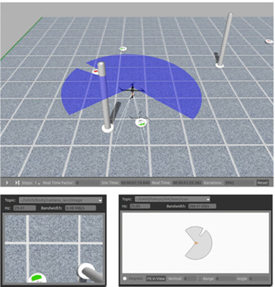
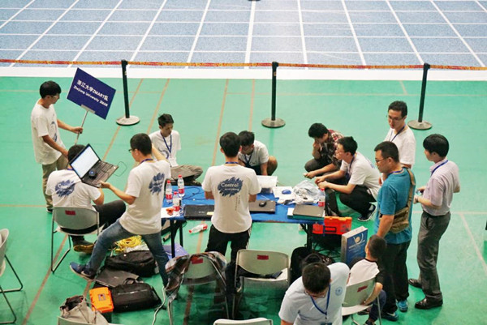

-
- Basic info. 基本信息
- 个人信息: 朱疆成 / 男 / 26岁
- 教育经历: 博士研究生 / 浙江大学 / 控制科学与工程
- 科学硕士 / 加州大学-圣地亚哥 / 电子与计算机工程
- 工学学士 / 浙江大学 / 自动化 / 竺可桢学院 工程教育高级班
- 英语水平: TOEFL (93) / CET-6 (619)
- GitHub: www.github.com/silentriverg
-
- Academics. 学术研究
空中机器人（2011.10-今）
-
空中云台相机大范围周视与锁定跟踪系统
本研究直接应用于无人机对大型场地中多个地面目标的视觉识别与持续跟踪。系统分为云台周视相机和云台跟踪相机两部分。通过云台驱动的斜下视相机旋转，无人机可以获得360度范围内视觉信息，解决了下视摄像头范围狭窄和安装多个斜视摄像头的资源问题。而云台跟踪相机用于执行对单个目标的持续跟踪任务，对动态目标的响应速度较机体运动跟踪方法大为提升。周视相机通过HOG+SVM分类器对地面目标进行识别和分类，通过PnP视觉坐标反解并与跟踪相机交接，跟踪相机进而通过颜色特征对地面目标进行持续跟踪。
-
针对动态多目标的增强学习自主决策器
本研究应用于无人机空对地驱赶策略。通过对地面目标行为建模生成百万数量级的训练样本，通过建立离散查找表，对无人机行为生成对应奖励。本研究在增强学习框架中首次引入action-delay概念，建模中考虑了无人机动力学和抵近轨迹所需要的时间，形成了顶层策略和下层技术对向合流的趋势，增强了实用性。
研究结果部分应用于浙江大学空中机器人队在2016年国际空中机器人大赛策略层，获得亚太赛区第一名。研究论文提交给裁判组并获得认可，使得比赛规则发生变化。
J. Zhu and C. Xu*, Air-to-ground Shepherd Problem: an Action-Delay Reinforcement Learning Approach, submitted to ACC 2017.
-
无人机对地面运动目标的动态规划拦截方法
为了解决空中机器人对地面目标的拦截问题，提出了基于动态规划算法和分段抵近规则为基础的拦截方法，能够很好的处理拦截过程中地面目标的转向和掉头等动作。本方法应用于浙江大学空中机器人队2016比赛规划层。
J. Zhu, J. Zhu and C. Xu*, Simultaneous Tracking and Approaching of Quadrotor Towards Mobile Vehicle via Dynamic Programming, submitted to IJARS.
-
传感器在环多智能体仿真系统
针对无人机实验场地要求高、风险大的特点，本研究构建了一个用于国际空中机器人大赛任务7的仿真平台，用于测试传感器、轨迹、策略等算法。该仿真器基于ROS和Gazebo，能够在仿真中实现传感器在环。且该控制器基于ROS，可以在较小改动情况下用于支持ROS的硬件平台。
J. Zhu, B. Ye and C. Xu*, A Comprehensive Simulation Testbench for Aerial Robot in Dynamic Scenario Using Gazebo-ROS, in preparation.
 -
基于spike特征的无人机室内自主探索
本研究提供了一种基于几何向量的遍历搜索算法，和SLAM算法结合，用以实现四旋翼无人机在目标场地中的路径规划。与常规的概率路标算法等相比，这种算法实现较为简单，计算量较小，适合在几何环境简单，效率和鲁棒性要求高的任务环境当中使用。
《四旋翼直升机导航系统:路径规划与室内搜索》获2012年浙江大学优秀毕业设计。
其它研究（2012.9-今）
-
无人机编队测试平台设计
搭建了一个基于OptiTrack视觉捕捉系统的无人机编队平台，并成功进行了实验。
J. Zhu, J. Zhu and C. Xu*. A testbed for aerial robots formation flight [C], the IEEE International Conference on Information and Automation (ICIA), 2016 (Accepted)
-
基于梯度优化的PID参数调节
本研究通过梯度优化和扩展变量系统的方法，提出了一种自动调节四旋翼PID控制器的方法。
Jiangcheng Z, Endong L, Shan G, et al. Gradient Optimization Based PID Tuning Approach on Quadrotor [C], ChineseControl & Decision Conference (CCDC), 2015 (Accepted)
-
面向状态估计器的信息安全研究进展
本文回顾了状态估计器的安全理论框架, 着重介绍了鲁棒状态估计器、欺骗攻击方法和攻击检测方法三个方面的最新进展， 对研究中现存的难点问题进行了探讨，并前瞻了未来的发展方向。
朱疆成, 冯冬芹, 许超, 谢磊. 面向状态估计器的信息安全研究进展 [C], 中国控制会议 (CCC), 2015 (录用)
-
一种coarse-to-fine的车标检测与识别方法
通过常规的车灯、前格栅、车牌等梯度信息和位置信息，由粗向细的定位车标位置并进行切割。进而将提取的车标与模板进行SIFT匹配，识别汽车所属厂家。
Jiangcheng Zhu. Vehicle Logo Detection and Recognition Using SIFT-based Method, UCSD Digital Image Processing Mini Project
-
一种基于滑动窗口的姿态估计算法
通过滑动窗口和优化的方法，截断了一定长度之后的数据量，降低了姿态估计运算量的同时保证了精度。
Jiangcheng Zhu, Ning Ma. Moving Horizon Strategy for Quadrotor Helicopter State Estimation, UCSD Convex Optimization Mini Project
- Experience. 项目与工作经验
浙大空中机器人队（ZMART）（2011.10 - 今）
-
IARC Mission 7 "Shepherd"
作为浙大空中机器人队一员，参与2014-2016国际空中机器人大赛（任务7）亚太赛区比赛，获得2015年最佳系统设计奖，2016年第一名。在队伍中负责日常管理和梯队建设的工作，技术上负责策略、全局视觉和轨迹规划的研发与实现。
 -
IARC Mission 6 "Republic of Nari"
本科生阶段参与首届IARC亚太赛区比赛，在任务6中负责SLAM和室内探索部分。
杭州若联科技（RobSense）（2016.7 - 今）
-
第三代飞控的视觉辅助降落
基于带有FPGA协处理器的第三代飞控，将常规视觉定位方法的预处理部分放在FPGA上进行高速处理，实现任务计算机和飞控的一体化。